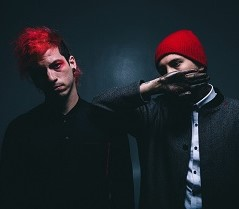
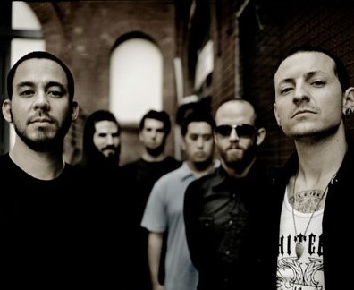
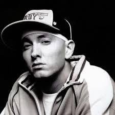

Twenty One Pilots
The best combination of rap and vocals.
One of their massive hits is Ride
The best combination of rap and vocals.
One of their massive hits is Ride

Linkin Park
Their compositions and music videos were a class apart.Their most famous song Numb
Their compositions and music videos were a class apart.Their most famous song Numb

Eminem
A.K.A Slim Shady is the best rapper the world has witnessed.Check out his masterpiece Rap God
A.K.A Slim Shady is the best rapper the world has witnessed.Check out his masterpiece Rap God
Bastille
A band not so famous ,But their songs are truely beautiful.Listen to Pompeii by Bastille
A band not so famous ,But their songs are truely beautiful.Listen to Pompeii by Bastille
Skrillex
Best DJ Ever? I think so! Listen to his piece Bangarang
Best DJ Ever? I think so! Listen to his piece Bangarang

Ed Sheeran
King of Soft Songs might be the best way to describe him.Listen to his Castle on the Hill
King of Soft Songs might be the best way to describe him.Listen to his Castle on the Hill
Post Malone
His songs are too damn groovy to get over them.Here's his Rockstar
His songs are too damn groovy to get over them.Here's his Rockstar
Chris Brown
He is the Embodiment of Hip-Hop. Check out his banger
Turn Up The Music
He is the Embodiment of Hip-Hop. Check out his banger
Turn Up The Music